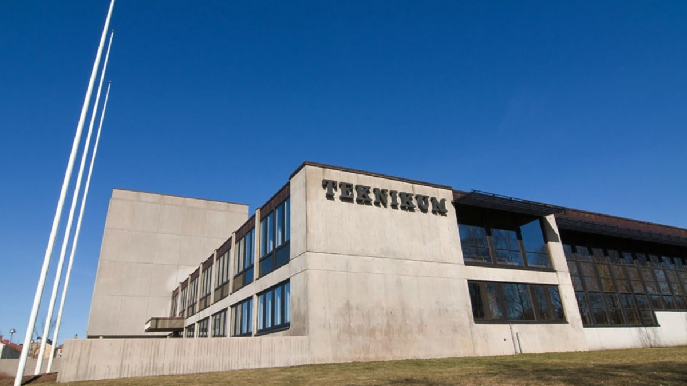

Jag är 16 år och gillar teknik sam att jag är driven till lära mig.
Mina intressen är att jag gillar att fiska, träna samt meka med epan .
Jag går på teknikprogrammet på Teknikum skolan i växjö. Teknikprogrammet handlar mycket om tekniska saker samt mycket mattematik. Jag valde teknik därför att jag har lätt för matte och jag gillar tekniska saker och lösningar.
Mina tankar kring webbutveckling är att det är en användbar och bra kurs, samt att man ska lära sig hur man gör en professionel webbplats.
Teknikums webbplats